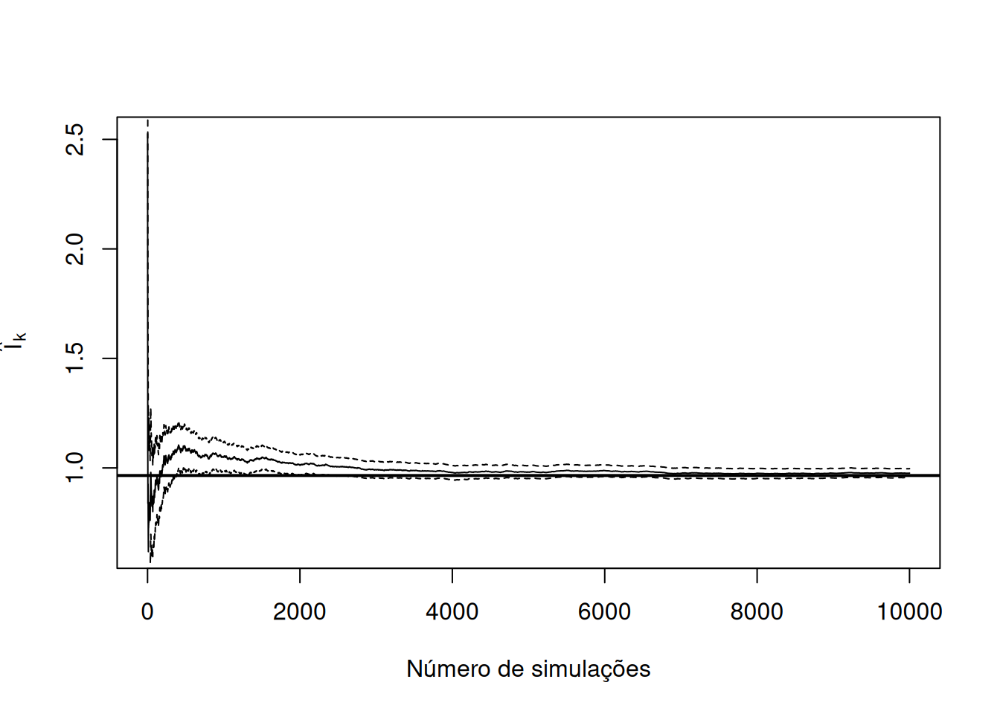

4 Métodos de Monte Carlo
Os métodos de Monte Carlo formam uma classe de algoritmos baseados em simulação aleatória. Eles surgiram no final da década de 1940, especialmente com os trabalhos de John von Neumann, Stanislaw Ulam, Enrico Fermi e Nicholas Metropolis. O nome deriva da cidade famosa por seus cassinos.
Na Estatística, os métodos de Monte Carlo são utilizados para:
estimar parâmetros da distribuição amostral;
calcular EQM (erro quadrático médio);
avaliar cobertura de intervalos de confiança;
estimar probabilidades de erro tipo I;
estimar o nível descritivo de um teste de hipóteses;
estimar poder de testes de hipóteses.
A ideia fundamental, dos métodos de Monte Carlo, é simples: quando uma quantidade pode ser escrita como uma esperança,
\[ I = E[h(X)], \]
podemos gerar realizações independentes
\[ X_1,\ldots,X_N \]
com a mesma distribuição de \(X\) e aproximar \(I\) pela média
\[ \widehat I_N = \frac{1}{N} \sum_{j=1}^N h(X_j). \]
A simplicidade dessa construção esconde uma grande generalidade. A mesma estrutura permite aproximar integrais, probabilidades, momentos, funções de risco e outras quantidades difíceis de calcular analiticamente. Além disso, simulações repetidas de conjuntos de dados permitem estudar viés, variância, erro quadrático médio, cobertura de intervalos, nível e poder de procedimentos estatísticos.
Base bibliográfica: a estrutura conceitual principal deste capítulo segue Voss (2014, cap. 3, pp. 69–108), Kroese; Taimre; Botev (2011, especialmente Capítulos 1, 8–10), Rubinstein; Kroese (2008, cap. 2, 4 e 5), Ross (2006, cap. 3, 7 e 8) e Thulin (2025, cap. 7, pp. 248–273).
4.1 Objetivos de aprendizagem
Ao final deste capítulo, espera-se que o leitor seja capaz de:
- distinguir números aleatórios de números pseudoaleatórios;
- explicar o papel de uma semente e de um gerador pseudoaleatório;
- construir um estimador de Monte Carlo para uma esperança;
- reescrever integrais e probabilidades como esperanças;
- demonstrar a ausência de viés e calcular a variância do estimador básico de Monte Carlo;
- estimar o erro padrão de Monte Carlo e construir intervalos de incerteza para a aproximação;
- determinar aproximadamente o número de simulações necessário para uma precisão desejada;
- reconhecer a taxa de convergência \(O(N^{-1/2})\);
- diagnosticar a ineficiência do Monte Carlo direto para eventos raros;
- aplicar amostragem por importância, variáveis antitéticas e variáveis de controle;
- planejar estudos de simulação para avaliar estimadores, intervalos e testes estatísticos;
- calcular o erro de Monte Carlo de medidas como viés, cobertura, nível e poder;
- implementar procedimentos reprodutíveis em R;
- distinguir Monte Carlo com amostras independentes de métodos MCMC.
Base bibliográfica: organização didática baseada em Voss (2014, cap. 1 e 3), Thulin (2025, seç. 7.1–7.3, pp. 248–265), Kroese; Taimre; Botev (2011, cap. 1, 8–10) e Rubinstein; Kroese (2008, cap. 2, 4–6).
4.2 Números aleatórios e pseudoaleatórios
Métodos de Monte Carlo dependem da capacidade de gerar grandes sequências de valores que se comportem, para os fins computacionais desejados, como realizações de variáveis aleatórias. Em computadores digitais, essas sequências são normalmente geradas por algoritmos determinísticos.
Definição
Um gerador de números pseudoaleatórios é um algoritmo determinístico que, a partir de um estado inicial ou semente, produz uma sequência de números concebida para apresentar propriedades estatísticas semelhantes às de uma sequência aleatória.
Base bibliográfica: Voss (2014, seç. 1.1, pp. 2–8), Kroese; Taimre; Botev (2011, cap. 1) e Rubinstein; Kroese (2008, seç. 2.2, a partir da p. 49).
4.2.1 Gerador congruencial linear
Um modelo histórico e didático de gerador é o gerador congruencial linear:
\[ X_{j+1} = (aX_j+c)\bmod m, \]
em que
- \(m\) é o módulo;
- \(a\) é o multiplicador;
- \(c\) é o incremento;
- \(X_0\) é a semente.
Uma sequência em \([0,1)\) pode ser obtida por
\[ U_j=\frac{X_j}{m}. \]
Base bibliográfica: Voss (2014, seç. 1.1.1, pp. 2–4).
Interpretação
O gerador é determinístico: a mesma semente produz exatamente a mesma sequência. A aleatoriedade é uma propriedade operacional da sequência para fins estatísticos, não uma indeterminação física do algoritmo.
4.2.1.1 Implementação didática em R
lcg <- function(n, x0, a, c, m) {
x <- numeric(n + 1)
x[1] <- x0
for (j in seq_len(n)) {
x[j + 1] <- (a * x[j] + c) %% m
}
data.frame(
iter = 0:n,
x = x,
u = x / m
)
}
lcg(
n = 10,
x0 = 3,
a = 5,
c = 7,
m = 200
) iter x u
1 0 3 0.015
2 1 22 0.110
3 2 117 0.585
4 3 192 0.960
5 4 167 0.835
6 5 42 0.210
7 6 17 0.085
8 7 92 0.460
9 8 67 0.335
10 9 142 0.710
11 10 117 0.585Base bibliográfica: algoritmo baseado em Voss (2014, Algoritmo 1.2 e Seção 1.1.1, pp. 2–4).
Observação
Geradores congruenciais simples são úteis para compreender os princípios de geração pseudoaleatória, mas não devem ser adotados automaticamente em aplicações científicas modernas. Qualidade de período, dependência serial e comportamento multidimensional são aspectos importantes de um gerador.
Base bibliográfica: Voss (2014, seç. 1.1.2–1.1.3, pp. 4–8) e Kroese; Taimre; Botev (2011, cap. 1).
4.2.2 Sementes e reprodutibilidade em R
Em R, uma semente pode ser fixada com:
set.seed(2026)
runif(5)[1] 0.6986735 0.5565305 0.1401400 0.2857233 0.5553690rnorm(5)[1] -1.9577250 1.0848713 0.2039567 0.5011464 1.0301596Se o código for executado novamente com a mesma semente e o mesmo ambiente de geração, a sequência produzida será reproduzível.
Base bibliográfica: Thulin (2025, seç. 7.1.1, pp. 248–249).
Interpretação
Fixar a semente não melhora a precisão estatística. Sua função é permitir que um experimento computacional seja reproduzido.
4.3 O estimador básico de Monte Carlo
Seja \(X\) uma variável ou vetor aleatório e seja \(h\) uma função real tal que
\[ E[|h(X)|]<\infty. \]
Queremos estimar
\[ I=E[h(X)]. \]
Se
\[ X_1,\ldots,X_N \]
são cópias independentes de \(X\), define-se
\[ \boxed{ \widehat I_N = \frac{1}{N} \sum_{j=1}^N h(X_j) }. \]
Definição
O estimador básico de Monte Carlo para \(E[h(X)]\) é a média amostral das avaliações \(h(X_j)\) em realizações independentes da distribuição de \(X\).
Base bibliográfica: Voss (2014, Definição 3.7 e Algoritmo 3.8, pp. 74–76).
A Lei Forte dos Grandes Números fornece, sob condições usuais,
\[ \widehat I_N \overset{q.c.}{\longrightarrow} I \qquad \text{quando } N\to\infty. \]
Esse resultado justifica a consistência da aproximação.
Base bibliográfica: Voss (2014, seç. 3.1–3.2, pp. 69–76).
4.4 Integração de Monte Carlo
Uma integral pode muitas vezes ser reescrita como uma esperança. Essa transformação é o ponto de partida da integração de Monte Carlo.
4.4.1 Integral em \([0,1]\)
Considere
\[ I = \int_0^1 g(x)\,dx. \]
Se
\[ U\sim U(0,1), \]
então
\[ I = E[g(U)]. \]
Logo,
\[ \widehat I_N = \frac{1}{N} \sum_{j=1}^N g(U_j), \qquad U_j\stackrel{iid}{\sim}U(0,1). \]
Base bibliográfica: a representação de integrais como esperanças é uma aplicação padrão de Monte Carlo desenvolvida em Voss (2014, seç. 3.1–3.2) e ilustrada em R por Thulin (2025, seç. 7.1.4, pp. 254–256). Ross (2006, cap. 3, pp. 41–48) também apresenta o uso de números aleatórios na avaliação de integrais.
Exemplo: \(\int_0^1 x^3,dx\)
O valor exato é
\[ I = \int_0^1x^3\,dx = \frac14. \]
Uma aproximação de Monte Carlo é:
set.seed(2025)
N <- 100000
u <- runif(N)
I_hat <- mean(u^3)
I_hat[1] 0.2503221A estimativa tende a se aproximar de \(0{,}25\) quando \(N\) cresce.
Base bibliográfica: exemplo computacional baseado na formulação de Voss (2014, cap. 3).
4.4.2 Integral em um intervalo \((a,b)\)
Para
\[ I = \int_a^b g(x)\,dx, \]
faça
\[ x = a+(b-a)u, \qquad u\in(0,1). \]
Então
\[ dx = (b-a)\,du \]
e
\[ I = (b-a) \int_0^1 g(a+(b-a)u)\,du. \]
Portanto,
\[ I = E[h(U)], \]
onde
\[ h(U) = (b-a) g(a+(b-a)U). \]
O estimador é
\[ \widehat I_N = \frac{b-a}{N} \sum_{j=1}^N g(a+(b-a)U_j). \]
4.4.3 Integral em \((0,\infty)\)
Para
\[ I = \int_0^\infty g(x)\,dx, \]
uma possibilidade é usar
\[ u = \frac{1}{x+1}, \]
o que implica
\[ x = \frac{1}{u}-1 \]
e
\[ dx = -\frac{1}{u^2}\,du. \]
Assim,
\[ I = \int_0^1 \frac{ g\left(\frac{1}{u}-1\right) }{ u^2 }\,du. \]
Logo,
\[ h(u) = \frac{ g\left(\frac{1}{u}-1\right) }{ u^2 }. \]
Observação
Uma transformação matematicamente correta pode gerar um integrando com variância muito elevada. A eficiência de Monte Carlo depende de
\[ \operatorname{Var}[h(U)], \]
e não apenas da existência da identidade integral. Para integrais de cauda, uma escolha probabilística por amostragem de importância pode ser muito mais eficiente.
Base bibliográfica: Voss (2014, seç. 3.2–3.3, pp. 74–96).
4.4.4 Integrais multidimensionais
Para
\[ I = \int_{[0,1]^d} g(x_1,\ldots,x_d) \,dx_1\cdots dx_d, \]
se
\[ U = (U_1,\ldots,U_d) \]
tem componentes independentes \(U(0,1)\), então
\[ I=E[g(U)]. \]
Com vetores independentes
\[ U^{(1)},\ldots,U^{(N)}, \]
temos
\[ \widehat I_N = \frac{1}{N} \sum_{j=1}^N g(U^{(j)}). \]
Interpretação
A taxa básica de erro de Monte Carlo continua sendo da ordem \(N^{-1/2}\). Ela não exibe explicitamente uma potência dependente da dimensão como ocorre em muitas regras determinísticas de quadratura. Entretanto, isso não significa que a dimensão seja irrelevante: a variância de \(g(U)\), o custo de gerar vetores e a geometria do integrando podem piorar com \(d\).
Thulin (2025, pp. 254–256) observa que Monte Carlo é particularmente atraente para integrais de dimensão elevada, enquanto métodos determinísticos podem ser superiores em problemas simples de baixa dimensão.
4.4.5 Integração por área
Outra construção é interpretar uma área como probabilidade. Para o quarto de círculo unitário,
\[ x^2+y^2\leq 1, \qquad 0\leq x,y\leq1, \]
temos
\[ P(X^2+Y^2\leq1) = \frac{\pi}{4}, \]
quando \(X,Y\stackrel{iid}{\sim}U(0,1)\).
set.seed(2026)
N <- 10000
x <- runif(N)
y <- runif(N)
mean(x^2 + y^2 <= 1)[1] 0.7816pi / 4[1] 0.7853982Base bibliográfica: exemplo baseado na Seção 7.1.4 de Thulin (2025, pp. 254–256).
4.5 Estimação de probabilidades
Se \(A\) é um evento, sua função indicadora é
\[ I_A(X) = \begin{cases} 1, & X\in A,\\ 0, & X\notin A. \end{cases} \]
Como
\[ P(X\in A) = E[I_A(X)], \]
a probabilidade pode ser estimada por
\[ \widehat p_N = \frac{1}{N} \sum_{j=1}^N I_A(X_j). \]
Base bibliográfica: Voss (2014, seç. 3.1 e Exemplo 3.18, pp. 71–72 e 81).
Como as indicadoras são Bernoulli,
\[ E(\widehat p_N)=p \]
e
\[ \operatorname{Var}(\widehat p_N) = \frac{p(1-p)}{N}. \]
Uma estimativa do erro padrão é
\[ \widehat{ep}_{MC}(\widehat p_N) = \sqrt{ \frac{ \widehat p_N(1-\widehat p_N) }{ N } }. \]
Exemplo: probabilidade de cauda normal
Considere
\[ X\sim N(0,1) \]
e
\[ p=P(X>2{,}5). \]
set.seed(20262)
N <- 1e6
x <- rnorm(N)
p_hat <- mean(x > 2.5)
se_mc <- sqrt(
p_hat * (1 - p_hat) / N
)
c(
estimate = p_hat,
mc_se = se_mc,
exact = pnorm(2.5, lower.tail = FALSE)
) estimate mc_se exact
6.225000e-03 7.865271e-05 6.209665e-03 Um intervalo assintótico de Monte Carlo é
\[ \widehat p_N \pm 1{,}96 \widehat{ep}_{MC}. \]
Base bibliográfica: Voss (2014, Exemplo 3.18 e Seção 3.2.4, pp. 81–84).
4.6 Erro de Monte Carlo
Defina
\[ Y_j=h(X_j) \]
e
\[ \sigma^2 = \operatorname{Var}[h(X)]<\infty. \]
O estimador é
\[ \widehat I_N = \bar Y_N. \]
4.6.1 Viés, variância e MSE
Como
\[ E(\widehat I_N) = I, \]
o estimador básico é não viesado:
\[ \operatorname{bias}(\widehat I_N)=0. \]
Por independência,
\[ \operatorname{Var}(\widehat I_N) = \frac{\sigma^2}{N}. \]
Portanto,
\[ \operatorname{MSE}(\widehat I_N) = \frac{\sigma^2}{N} \]
e
\[ \operatorname{RMSE}(\widehat I_N) = \frac{\sigma}{\sqrt N}. \]
Base bibliográfica: Voss (2014, Proposição 3.14, pp. 77–80).
Resultado central
A precisão do Monte Carlo básico melhora à taxa
\[ O(N^{-1/2}). \]
Assim, para reduzir aproximadamente o erro pela metade, é necessário multiplicar \(N\) por quatro.
Base bibliográfica: Voss (2014, pp. 79–80).
4.6.2 Estimativa do erro padrão
A variância de \(Y=h(X)\) é estimada por
\[ \widehat\sigma^2 = \frac{1}{N-1} \sum_{j=1}^N \left( Y_j-\bar Y_N \right)^2. \]
Consequentemente,
\[ \widehat{\operatorname{Var}} (\widehat I_N) = \frac{\widehat\sigma^2}{N} \]
e
\[ \boxed{ \widehat{ep}_{MC} = \frac{\widehat\sigma}{\sqrt N} }. \]
Base bibliográfica: Voss (2014, Eq. 3.9, pp. 80–81).
4.6.3 Teorema Central do Limite
Se
\[ 0<\sigma^2<\infty, \]
o Teorema Central do Limite fornece
\[ \frac{ \sqrt N (\widehat I_N-I) }{ \sigma } \overset{d}{\longrightarrow} N(0,1). \]
Assim, para \(N\) suficientemente grande,
\[ I \approx \widehat I_N \pm z_{1-\alpha/2} \frac{\widehat\sigma}{\sqrt N}. \]
Base bibliográfica: Voss (2014, seç. 3.2.4, pp. 82–84).
Observação
A Lei Forte dos Grandes Números e o Teorema Central do Limite têm papéis distintos.
- A Lei dos Grandes Números justifica a convergência da média para a esperança.
- O TCL fornece a aproximação normal usada para quantificar o erro em escala \(N^{-1/2}\) e requer condições adicionais, em particular variância finita na forma usada aqui.
Se \(\operatorname{Var}[h(X)]=\infty\), a média ainda pode convergir sob condições mais fracas, mas os intervalos normais e a taxa usual podem deixar de ser úteis.
Base bibliográfica: Voss (2014, pp. 82–84).
4.7 Escolha do número de simulações
A escolha de \(N\) deve refletir a precisão desejada e o custo computacional.
4.7.1 Critério baseado no MSE
Como
\[ \operatorname{MSE}(\widehat I_N) = \frac{\sigma^2}{N}, \]
para obter
\[ \operatorname{RMSE} \leq \varepsilon, \]
é suficiente escolher
\[ N \geq \frac{\sigma^2}{\varepsilon^2}. \]
Base bibliográfica: Voss (2014, seç. 3.2.3 e Eq. 3.10, pp. 80–82).
4.7.2 Critério baseado em probabilidade aproximada
Pelo TCL, para desejar aproximadamente
\[ P( |\widehat I_N-I| \leq \varepsilon ) \geq 1-\alpha, \]
uma escolha aproximada é
\[ N \gtrsim \frac{ z_{1-\alpha/2}^2\sigma^2 }{ \varepsilon^2 }. \]
Se \(\sigma^2\) for desconhecida, uma execução piloto pode ser usada para estimá-la antes da simulação principal.
Base bibliográfica: Voss (2014, Lema 3.19 e Exemplo 3.20, pp. 82–84).
Observação sobre parada sequencial
Interromper automaticamente a simulação assim que um erro padrão estimado fica abaixo de um limiar parece natural, mas deve ser feito com cuidado: se o próprio \(N\) depende das realizações observadas, propriedades do estimador podem ser alteradas.
Base bibliográfica: Voss (2014, seç. 3.2.3, pp. 81–82).
4.8 Erro relativo e eventos raros
Quando \(p\) é pequeno, um erro absoluto aparentemente pequeno pode representar grande incerteza relativa.
Para o estimador direto
\[ \widehat p_N = \frac{1}{N} \sum_{j=1}^N I_A(X_j), \]
temos aproximadamente
\[ ep(\widehat p_N) = \sqrt{ \frac{p(1-p)}{N} }. \]
O erro padrão relativo é
\[ \frac{ ep(\widehat p_N) }{ p } = \sqrt{ \frac{1-p}{Np} }. \]
Se \(p\) é muito pequeno,
\[ \frac{ ep(\widehat p_N) }{ p } \approx \frac{1}{\sqrt{Np}}. \]
Interpretação
O produto \(Np\) é aproximadamente o número esperado de ocorrências do evento raro. Se \(Np\) é pequeno, a estimativa direta será altamente instável; pode inclusive resultar em zero simplesmente porque nenhum evento ocorreu na simulação.
Base bibliográfica: a ineficiência do Monte Carlo direto para eventos raros e métodos específicos para esse problema são tratados em Kroese; Taimre; Botev (2011, cap. 10) e Rubinstein; Kroese (2008, cap. 5).
4.9 Redução de variância
Aumentar \(N\) reduz o erro, mas pode ser caro. Outra estratégia é construir um estimador com a mesma esperança e variância menor.
Base bibliográfica: Voss (2014, seç. 3.3, pp. 84–96), Kroese; Taimre; Botev (2011, cap. 9, pp. 347–379), Rubinstein; Kroese (2008, cap. 5) e Ross (2006, cap. 8).
4.9.1 Amostragem por importância
Suponha que
\[ I = E_f[h(X)] = \int h(x)f(x)\,dx. \]
Escolha uma densidade auxiliar \(q\) tal que
\[ q(x)>0 \]
sempre que
\[ h(x)f(x)\neq0. \]
Então
\[ I = \int h(x) \frac{f(x)}{q(x)} q(x)\,dx = E_q \left[ h(Y) \frac{f(Y)}{q(Y)} \right], \]
onde
\[ Y\sim q. \]
O estimador é
\[ \boxed{ \widehat I_{IS} = \frac{1}{N} \sum_{j=1}^N h(Y_j) \frac{ f(Y_j) }{ q(Y_j) } }. \]
Base bibliográfica: Voss (2014, seç. 3.3.1 e Algoritmo 3.22, pp. 84–88).
Interpretação
A densidade \(q\) deve gerar mais observações nas regiões que contribuem fortemente para a integral. Os pesos
\[ w(y) = \frac{f(y)}{q(y)} \]
corrigem a mudança da distribuição de amostragem.
4.9.1.1 Exemplo: cauda normal rara
Considere
\[ p=P(X>4), \qquad X\sim N(0,1). \]
No Monte Carlo direto, simulam-se valores de \(N(0,1)\). Em amostragem por importância, podemos gerar
\[ Y\sim N(4,1) \]
e usar o peso de verossimilhança.
set.seed(2026)
N <- 100000
# Monte Carlo direto
x <- rnorm(N)
direct <- as.numeric(x > 4)
p_direct <- mean(direct)
se_direct <- sd(direct) / sqrt(N)
# Importance sampling
y <- rnorm(N, mean = 4, sd = 1)
w <- dnorm(y, mean = 0, sd = 1) /
dnorm(y, mean = 4, sd = 1)
z <- as.numeric(y > 4) * w
p_is <- mean(z)
se_is <- sd(z) / sqrt(N)
rbind(
direct = c(estimate = p_direct, se = se_direct),
importance = c(estimate = p_is, se = se_is),
exact = c(
estimate = pnorm(4, lower.tail = FALSE),
se = NA
)
) estimate se
direct 4.000000e-05 1.999970e-05
importance 3.203063e-05 2.145872e-07
exact 3.167124e-05 NAA comparação relevante é entre os erros padrão obtidos para o mesmo \(N\).
Base bibliográfica: construção baseada em Voss (2014, seç. 3.3.1, pp. 84–88) e na discussão de eventos raros de Kroese; Taimre; Botev (2011, cap. 10). :::
Observação
Uma escolha ruim de \(q\) pode aumentar a variância e, em casos extremos, produzir pesos altamente instáveis ou variância infinita. Amostragem por importância não é automaticamente superior ao Monte Carlo direto.
Base bibliográfica: Kroese; Taimre; Botev (2011, cap. 9–10).
4.9.2 Variáveis antitéticas
O método de variáveis antitéticas cria amostras marginalmente corretas, mas negativamente correlacionadas.
Se
\[ U\sim U(0,1), \]
então
\[ 1-U\sim U(0,1). \]
Para uma função monotônica \(h\), os valores
\[ h(U) \qquad\text{e}\qquad h(1-U) \]
podem apresentar covariância negativa.
O estimador por pares é
\[ \widehat I_A = \frac{1}{M} \sum_{j=1}^M \frac{ h(U_j)+h(1-U_j) }{2}. \]
Base bibliográfica: Voss (2014, seç. 3.3.2 e Algoritmo 3.26, pp. 88–93).
4.9.2.1 Exemplo com \(h(u)=u^3\)
set.seed(2026)
M <- 50000
u <- runif(M)
mc_pair <- (u^3 + runif(M)^3) / 2
anti_pair <- (u^3 + (1 - u)^3) / 2
c(
se_independent_pairs =
sd(mc_pair) / sqrt(M),
se_antithetic_pairs =
sd(anti_pair) / sqrt(M)
)se_independent_pairs se_antithetic_pairs
0.0008994420 0.0004995891 Como \(u^3\) é crescente, o pareamento \(u\) e \(1-u\) induz uma forte compensação entre valores altos e baixos.
4.9.3 Variáveis de controle
Suponha que queremos estimar
\[ I=E[Y] \]
e dispomos de uma variável \(C\) correlacionada com \(Y\) cuja esperança
\[ \mu_C=E[C] \]
é conhecida.
Considere
\[ Y_\beta = Y - \beta(C-\mu_C). \]
Como
\[ E(C-\mu_C)=0, \]
temos
\[ E(Y_\beta)=E(Y)=I. \]
A escolha ótima, quando as covariâncias são conhecidas, é
\[ \beta^\star = \frac{ \operatorname{Cov}(Y,C) }{ \operatorname{Var}(C) }. \]
Base bibliográfica: Voss (2014, seç. 3.3.3, pp. 93–96).
4.9.3.1 Exemplo: novamente \(\int_0^1u^3\,du\)
Tome
\[ Y=U^3 \]
e
\[ C=U. \]
Sabemos que
\[ E(U)=\frac12. \]
Além disso,
\[ \beta^\star = \frac{ \operatorname{Cov}(U^3,U) }{ \operatorname{Var}(U) } = 0{,}9. \]
Logo,
\[ \widehat I_{CV} = \frac{1}{N} \sum_{j=1}^N \left[ U_j^3 - 0{,}9 \left(U_j-\frac12\right) \right]. \]
set.seed(2026)
N <- 100000
u <- runif(N)
y <- u^3
y_cv <- u^3 -
0.9 * (u - 0.5)
c(
estimate_mc = mean(y),
se_mc = sd(y) / sqrt(N),
estimate_cv = mean(y_cv),
se_cv = sd(y_cv) / sqrt(N),
exact = 1 / 4
) estimate_mc se_mc estimate_cv se_cv exact
0.2515836563 0.0008998442 0.2505637448 0.0003592166 0.2500000000 Base bibliográfica: exemplo baseado no método de variáveis de controle de Voss (2014, seç. 3.3.3).
4.9.4 Outras técnicas importantes
Kroese; Taimre; Botev (2011, cap. 9) apresenta, além das três técnicas anteriores:
- Monte Carlo condicional;
- estratificação;
- amostragem por hipercubo latino;
- Quasi-Monte Carlo.
Rubinstein; Kroese (2008, cap. 5) discute também o uso de números aleatórios comuns para comparar sistemas ou configurações.
Observação
Essas técnicas não são desenvolvidas em detalhe neste capítulo introdutório. Para um curso de mestrado, estratificação, Monte Carlo condicional e Quasi-Monte Carlo são extensões naturais após as três técnicas básicas.
4.10 Monitoramento da convergência
Considere, para \(k=1,\ldots,N\),
\[ \widehat I_k = \frac{1}{k} \sum_{j=1}^kY_j. \]
Traçar \(\widehat I_k\) ao longo de \(k\) é uma forma útil de visualizar o comportamento da simulação.
Para cada \(k\), uma banda aproximada pontual é
\[ \widehat I_k \pm 1{,}96 \frac{ \widehat\sigma_k }{ \sqrt{k} }. \]
Observação
Essas bandas são pontuais. Elas quantificam a incerteza de uma estimativa se a simulação fosse interrompida naquele \(k\). Não constituem uma banda simultânea que deva conter toda a trajetória com probabilidade 95%.
4.10.1 Exemplo
Considere
\[ h(x) = (\cos(50x)+\sin(20x))^2, \qquad X\sim U(0,1). \]
O valor da integral é aproximadamente
\[ I=0{,}965200936. \]
set.seed(1234)
N <- 10000
x <- runif(N)
y <- (cos(50 * x) + sin(20 * x))^2
k <- seq_len(N)
I_hat <- cumsum(y) / k
sum_y2 <- cumsum(y^2)
# variância amostral acumulada para k >= 2
s2 <- rep(NA_real_, N)
s2[-1] <- (
sum_y2[-1] -
k[-1] * I_hat[-1]^2
) / (k[-1] - 1)
se <- sqrt(s2 / k)
LI <- I_hat - 1.96 * se
LS <- I_hat + 1.96 * se
I_true <- 0.9652009360501453
plot(
k,
I_hat,
type = "l",
xlab = "Número de simulações",
ylab = expression(hat(I)[k])
)
lines(k, LI, lty = 2)
lines(k, LS, lty = 2)
abline(
h = I_true,
lwd = 2
)
A fórmula usada no código emprega a variância amostral com denominador \(k-1\), em concordância com a estimativa apresentada em Voss (2014, Eq. 3.9, pp. 80–81).
4.11 Estudos de simulação em Estatística
Monte Carlo também é usado para responder uma pergunta diferente: como um procedimento estatístico se comportaria se o experimento amostral fosse repetido muitas vezes sob um modelo conhecido?
Esse uso exige distinguir dois tamanhos:
- \(n\): tamanho da amostra estatística em cada conjunto de dados;
- \(R\): número de repetições do estudo de simulação.
Definição
Um estudo de simulação Monte Carlo especifica um processo gerador de dados, gera repetidamente conjuntos de dados desse processo, aplica um método estatístico em cada conjunto e resume numericamente seu desempenho.
Base bibliográfica: Voss (2014, seç. 3.4, pp. 96–106) e Thulin (2025, seç. 7.2, pp. 256–263).
4.11.1 Estrutura geral
Para cada cenário \(\psi\):
- especifique o mecanismo gerador e os parâmetros;
- para \(r=1,\ldots,R\):
- gere uma amostra de tamanho \(n\);
- calcule o estimador, intervalo ou teste;
- armazene as medidas de interesse;
- resuma o desempenho;
- quantifique o próprio erro de Monte Carlo das medidas estimadas.
Base bibliográfica: Thulin (2025, seç. 7.2.1–7.2.5, pp. 256–263).
4.12 Avaliação de estimadores por simulação
Se
\[ \hat\theta_1,\ldots,\hat\theta_R \]
são estimativas obtidas em \(R\) amostras simuladas e o parâmetro verdadeiro é \(\theta\), pode-se estimar:
4.12.1 Viés
\[ \widehat{\operatorname{bias}} = \frac{1}{R} \sum_{r=1}^R \hat\theta_r - \theta. \]
4.12.2 Variância
\[ \widehat{\operatorname{Var}} = \frac{1}{R-1} \sum_{r=1}^R \left( \hat\theta_r - \bar{\hat\theta} \right)^2. \]
4.12.3 Erro quadrático médio
\[ \widehat{\operatorname{MSE}} = \frac{1}{R} \sum_{r=1}^R (\hat\theta_r-\theta)^2. \]
Interpretação
Viés e variância medem aspectos diferentes. Um estimador pode ter viés pequeno e variabilidade elevada. O MSE combina os dois efeitos:
\[ \operatorname{MSE} = \operatorname{Var} + \operatorname{bias}^2. \]
Base bibliográfica: Voss (2014, Definições 3.9–3.11 e Lema 3.12, pp. 76–78) e Thulin (2025, seç. 7.2.1, pp. 256–258).
4.12.4 Exemplo: média e mediana sob normalidade
Thulin (2025, seç. 7.2.1, pp. 256–258) compara estimadores da média normal por simulação. Uma versão compacta em R é:
set.seed(2026)
R <- 10000
n <- 25
mu <- 0
sigma <- 1
res <- replicate(R, {
x <- rnorm(n, mean = mu, sd = sigma)
c(
mean = mean(x),
median = median(x),
midrange = (min(x) + max(x)) / 2
)
})
res <- t(res)
bias <- colMeans(res) - mu
variance <- apply(res, 2, var)
mse <- colMeans(
sweep(res, 2, mu, "-")^2
)
rbind(
bias = bias,
variance = variance,
mse = mse
) mean median midrange
bias 0.002189375 0.0005272098 -0.0003437428
variance 0.040132544 0.0617177284 0.1342129415
mse 0.040133324 0.0617118346 0.1341996384Esse tipo de simulação permite avaliar o desempenho dos estimadores no cenário especificado. A conclusão não deve ser extrapolada automaticamente para distribuições diferentes.
4.13 Cobertura de intervalos de confiança
Suponha que, na repetição \(r\), um procedimento produza
\[ [L_r,U_r]. \]
A cobertura é
\[ C = P_\theta( L\leq\theta\leq U ). \]
A estimativa Monte Carlo é
\[ \widehat C_R = \frac{1}{R} \sum_{r=1}^R I(L_r\leq\theta\leq U_r). \]
Base bibliográfica: Voss (2014, seç. 3.4.2, pp. 100–103).
Como cada indicador é Bernoulli, o erro padrão Monte Carlo da cobertura estimada é aproximadamente
\[ \widehat{ep}_{MC} (\widehat C_R) = \sqrt{ \frac{ \widehat C_R (1-\widehat C_R) }{ R } }. \]
Exemplo bibliográfico
Voss (2014, Exemplo 3.38, pp. 102–103) usa simulação para avaliar a cobertura de um intervalo construído para médias quando os dados são Poisson. A simulação mostra que o nível de cobertura pode ficar muito abaixo do nominal em certos valores do parâmetro, revelando uma inadequação que não é evidente pela simples aplicação mecânica da fórmula.
4.14 Erro tipo I e poder
Para um teste de nível nominal \(\alpha\), a taxa de erro tipo I é
\[ P(\text{rejeitar }H_0\mid H_0\text{ verdadeira}). \]
Em simulação, gere dados sob \(H_0\) e calcule
\[ \widehat\alpha_R = \frac{ \#\{\text{rejeições}\} }{ R }. \]
Sob uma alternativa, a mesma proporção estima o poder:
\[ \widehat\pi_R = \frac{ \#\{\text{rejeições}\} }{ R }. \]
Base bibliográfica: Thulin (2025, seç. 7.2.2–7.2.4, pp. 258–262) e Voss (2014, seç. 3.4.3, pp. 103–106).
O erro padrão Monte Carlo dessas proporções é
\[ \sqrt{ \frac{ \widehat p_R (1-\widehat p_R) }{ R } }. \]
Interpretação
Um estudo com \(R=1000\) repetições não estima exatamente uma taxa de 5%. Ele próprio produz uma estimativa aleatória. Por exemplo, se \(\widehat p=0{,}05\) e \(R=1000\),
\[ ep_{MC} \approx \sqrt{ \frac{0{,}05(0{,}95)}{1000} } \approx 0{,}0069. \]
Esse erro deve ser levado em conta ao comparar procedimentos.
4.15 Quantas repetições usar em um estudo de simulação?
A quantidade \(R\) deve ser escolhida com base na precisão desejada das medidas de desempenho e no custo de cada repetição.
Thulin (2025, seç. 7.2.5, pp. 262–263) recomenda distinguir:
- número de cenários estudados;
- número de iterações por cenário.
Um estudo amplo precisa variar cenários relevantes — tamanho amostral, distribuição, nível de ruído, efeito, grau de assimetria ou outros parâmetros — e também usar \(R\) suficiente para controlar a incerteza de Monte Carlo.
Erro de Monte Carlo de uma média de desempenho
Se cada repetição produz uma quantidade \(T_r\), então
\[ \bar T_R = \frac{1}{R} \sum_{r=1}^R T_r \]
tem erro padrão Monte Carlo estimado por
\[ \widehat{ep}_{MC} (\bar T_R) = \frac{ s_T }{ \sqrt R }, \]
onde \(s_T\) é o desvio padrão dos \(T_r\).
Esse princípio vale para estimativas de viés, erro, comprimento de intervalo e muitas outras medidas representadas como médias de repetições.
4.16 Planejamento de um estudo de simulação
Uma estrutura didática útil é separar cinco elementos.
4.16.1 Objetivo
Defina a pergunta antes de simular. Exemplos:
- comparar dois estimadores;
- verificar cobertura de um intervalo;
- avaliar robustez a não normalidade;
- estimar poder;
- determinar um tamanho amostral.
4.16.2 Processo gerador de dados
O mecanismo deve ser suficientemente explícito para que outra pessoa possa reproduzi-lo:
\[ X\sim F_\psi. \]
Indique todos os parâmetros e relações de dependência.
4.16.3 Cenários
Escolha valores de \(\psi\) que cubram situações relevantes. Uma conclusão baseada em um único cenário é uma conclusão sobre aquele cenário, e não uma validação universal do método.
4.16.4 Medidas de desempenho
Decida previamente quais medidas serão usadas:
- viés;
- variância;
- RMSE;
- cobertura;
- comprimento médio do intervalo;
- taxa de erro tipo I;
- poder;
- taxa de falha numérica.
4.16.5 Precisão de Monte Carlo
Reporte \(R\) e, quando relevante, o erro padrão Monte Carlo das medidas.
Base bibliográfica: a importância de cenários e de quantificar incerteza de simulação é discutida em Thulin (2025, seç. 7.2.5, pp. 262–263).
4.17 Implementação reprodutível em R
4.17.1 Uma função para uma única repetição
Uma prática segura é escrever primeiro uma função que represente uma repetição do experimento.
uma_repeticao <- function(
n,
mu = 0,
sigma = 1
) {
x <- rnorm(
n,
mean = mu,
sd = sigma
)
c(
media = mean(x),
mediana = median(x)
)
}4.17.2 Repetindo o experimento
set.seed(2026)
R <- 10000
res <- replicate(
R,
uma_repeticao(
n = 25,
mu = 0,
sigma = 1
)
)
res <- t(res)4.17.3 Resumindo resultados
theta <- 0
bias <- colMeans(res) - theta
variance <- apply(
res,
2,
var
)
mse <- colMeans(
(res - theta)^2
)
data.frame(
estimator = colnames(res),
bias = bias,
variance = variance,
mse = mse
) estimator bias variance mse
media media 0.0021893745 0.04013254 0.04013332
mediana mediana 0.0005272098 0.06171773 0.06171183
Interpretação
Separar geração, análise e resumo torna a simulação mais fácil de testar. Se a função de uma única repetição estiver correta, o restante do estudo é principalmente repetição e agregação.
4.18 Erros comuns em Monte Carlo
4.18.1 Confundir erro de Monte Carlo com erro do modelo
Uma simulação pode ter erro de Monte Carlo muito pequeno e ainda responder a uma pergunta mal especificada. A precisão computacional não corrige um modelo incorreto.
4.18.2 Aumentar \(N\) sem examinar a variância
Se \(\operatorname{Var}[h(X)]\) é enorme, simplesmente aumentar \(N\) pode ser muito menos eficiente do que reformular o estimador.
4.18.3 Ignorar variância infinita
A taxa \(N^{-1/2}\) e os intervalos baseados no TCL exigem variância finita na formulação usada aqui.
4.18.4 Usar Monte Carlo direto em eventos raros
Quando \(p\) é muito pequeno, o número de ocorrências é aproximadamente \(Np\). A simulação pode precisar de um valor impraticavelmente grande de \(N\).
4.18.5 Misturar dependência com independência
As fórmulas
\[ \operatorname{Var}(\bar Y) = \frac{\sigma^2}{N} \]
pressupõem independência. Em MCMC ou em simulações com dependência, o erro padrão precisa incorporar autocorrelação.
4.18.6 Confundir erro de discretização e erro de Monte Carlo
Em modelos nos quais cada realização já resulta de uma aproximação numérica, o erro total pode combinar dois componentes:
\[ \text{erro de Monte Carlo} + \text{erro de discretização}. \]
Voss (2014, seç. 6.5, pp. 243–250) mostra explicitamente essa decomposição para simulações de equações diferenciais estocásticas.
4.19 Monte Carlo IID e MCMC
O Monte Carlo desenvolvido neste capítulo usa amostras independentes:
\[ X_1,\ldots,X_N \stackrel{iid}{\sim} \pi. \]
Em problemas nos quais gerar amostras independentes de \(\pi\) é difícil, pode-se construir uma cadeia de Markov cuja distribuição estacionária é \(\pi\). Isso conduz aos métodos Markov Chain Monte Carlo.
Definição conceitual
No Monte Carlo IID,
\[ \widehat I_N = \frac{1}{N} \sum h(X_j) \]
usa amostras independentes.
Em MCMC, a mesma forma de média é usada, mas
\[ X_1,X_2,\ldots \]
formam uma cadeia de Markov e são dependentes.
Base bibliográfica: Voss (2014, cap. 4, pp. 109–180) e Kroese; Taimre; Botev (2011, cap. 6).
Observação
As fórmulas de erro padrão do Monte Carlo IID não podem ser transportadas sem modificação para MCMC, pois a autocorrelação altera a variância efetiva da média.
MCMC merece um capítulo próprio: Metropolis–Hastings, Gibbs, diagnóstico de convergência, autocorrelação e tamanho efetivo de amostra não são desenvolvidos aqui.
4.20 Síntese do capítulo
Síntese
O método básico de Monte Carlo aproxima
\[ I=E[h(X)] \]
por
\[ \widehat I_N = \frac1N \sum_{j=1}^Nh(X_j). \]
Sob independência e variância finita,
\[ E(\widehat I_N)=I \]
e
\[ \operatorname{Var}(\widehat I_N) = \frac{ \operatorname{Var}[h(X)] }{ N }. \]
Consequentemente,
\[ RMSE(\widehat I_N) = O(N^{-1/2}). \]
Essa taxa explica por que reduzir variância pode ser mais eficiente do que apenas aumentar o número de simulações.
Em estudos de simulação estatística, Monte Carlo é usado em um segundo nível: conjuntos de dados são repetidamente gerados para estimar propriedades de procedimentos, como viés, MSE, cobertura e poder. Essas estimativas também têm erro de Monte Carlo e devem ser reportadas com uma precisão compatível com o objetivo do estudo.
4.21 Simulações de Monte Carlo com o pacote tidyMC
O pacote tidyMC busca contemplar e simplificar todo o fluxo de trabalho necessário para executar uma simulação de Monte Carlo, seja em um contexto acadêmico ou profissional. Assim, o tidyMC fornece funções para as seguintes tarefas:
Executar uma simulação de Monte Carlo para uma função definida pelo usuário sobre uma grade de parâmetros, utilizando
future_mc().Resumir os resultados por meio de funções de resumo (opcionais) definidas pelo usuário, usando
summary.mc().Criar gráficos dos resultados da simulação de Monte Carlo, que podem ser modificados pelo usuário, por meio de
plot.mc()eplot.summary.mc().Gerar uma tabela em LaTeX resumindo os resultados da simulação de Monte Carlo usando
tidy_mc_latex().
4.21.1 Instalação
O pacote tidyMC está disponível no CRAN. Para baixar a versão do CRAN basta:
install.packages("tidyMC")Em seguida, o pacote pode ser carregado com:
library(tidyMC)Além disso, os seguintes pacotes serão utilizados:
library(magrittr)
library(ggplot2)
library(kableExtra)4.21.2 Execute sua primeira Simulação de Monte Carlo com future_mc()
A função future_mc() permite executar uma simulação de Monte Carlo para uma função definida pelo usuário e para um conjunto especificado de parâmetros.
O primeiro argumento de future_mc() é fun, que deve ser uma função capaz de realizar três tarefas para uma única repetição e uma única combinação de parâmetros:
gerar os dados,
aplicar o método de interesse,
avaliar o resultado obtido.
A função future_mc() se encarrega de gerar automaticamente os laços sobre as grades de parâmetros desejadas, bem como repetir o experimento de Monte Carlo para cada combinação de parâmetros.
Considere o seguinte exemplo de função fun, que realiza exatamente as tarefas necessárias: geração dos dados, aplicação do método e avaliação dos resultados.
test_func <- function(param1 = 10, param2 = 2, n = 100) {
data <- rnorm(n, mean = param1, sd = param2)
stat <- mean(data)
stat_2 <- sum((data- mean(data))^2)/length(data)
dev_mu <- stat - param1
dev_sigma2 <- stat_2 - param2^2
dev_eqm_mu <- (stat - param1)^2
dev_eqm_sigma2 <- (stat_2 - param2^2)^2
return(list(mean = stat, var = stat_2, bmu = dev_mu, bsig2 = dev_sigma2,
eqmmu = dev_eqm_mu,
eqmsigma2 = dev_eqm_sigma2))
}O segundo argumento de future_mc() é repetitions, que deve ser um número inteiro especificando o total de iterações da simulação de Monte Carlo.
O terceiro argumento, param_list, deve ser uma lista cujos componentes têm nomes correspondentes aos parâmetros da função fun que deverão variar ao longo da simulação. Cada componente dessa lista é um vetor contendo os valores desejados da grade para aquele parâmetro.
Considere o exemplo a seguir para param_list. Observe que seus componentes recebem nomes que correspondem exatamente aos parâmetros da função test_func(): param e x1, respectivamente:
param_list <- list(
n = c(10, 50, 90)
)A função future_mc() cria automaticamente todas as combinações possíveis de parâmetros especificadas em param_list e executa a simulação de Monte Carlo para cada uma dessas combinações. Se você preferir não rodar a simulação para todas as combinações possíveis, pode fornecer param_table, que deve ser um data.frame ou data.table contendo apenas as combinações de parâmetros de interesse.
O argumento ... permite especificar outros argumentos da função fun que não estão em param_list. Esses argumentos permanecerão fixos ao longo de todas as combinações de parâmetros.
Requisitos formais que fun deve satisfazer:
Os argumentos presentes em
param_listdevem ser escalares;Toda variável usada dentro de fun deve ser definida internamente ou fornecida via
...;O valor retornado por
fundeve ser uma lista nomeada;Os nomes dos valores retornados e os nomes dos argumentos presentes em
param_listnão podem coincidir.
Se a função fun retorna uma lista nomeada de escalares, o usuário pode utilizar summary() para resumir todos os resultados da simulação de Monte Carlo.
set.seed(1234)
test_mc <- future_mc(
fun = test_func,
repetitions = 1000,
param_list = param_list,
param1 = 10,
param2 = 2
)Running single test-iteration for each parameter combination...
Test-run successfull: No errors occurred!Running whole simulation: Overall 3 parameter combinations are simulated ...
Simulation was successfull!
Running time: 00:00:00.728335summary(test_mc)Results for the output mean:
n=10: 9.991484
n=50: 9.992515
n=90: 9.997018
Results for the output var:
n=10: 3.678279
n=50: 3.916758
n=90: 3.949042
Results for the output bmu:
n=10: -0.008515738
n=50: -0.007484689
n=90: -0.002981764
Results for the output bsig2:
n=10: -0.3217209
n=50: -0.08324241
n=90: -0.0509576
Results for the output eqmmu:
n=10: 0.3646171
n=50: 0.08530073
n=90: 0.04476774
Results for the output eqmsigma2:
n=10: 3.350142
n=50: 0.5993374
n=90: 0.3374168
A função plot() retorna uma lista de objetos das classes gg e ggplot2. Essa lista conterá um gráfico de linhas para cada saída produzida pela função fun, representando as trajetórias dos resultados para os diferentes cenários da simulação.
plot(summary(test_mc))Para gerar uma tabela em LaTeX basta:
tidy_mc_latex(
x = summary(test_mc)
) %>%
print()4.22 Exercícios
Exercício 1 — gerador congruencial linear
Considere
\[ X_0=5 \]
e
\[ X_n = 3X_{n-1} \bmod 150. \]
- Calcule \(X_1,\ldots,X_{30}\).
- Converta os valores em \(U_n=X_n/150\).
- Determine empiricamente o período observado da sequência.
- Discuta por que um período curto é inadequado em Monte Carlo.
Exercício contextualizado com Voss (2014, seç. 1.1.1, pp. 2–4).
Exercício 2 — gerador congruencial misto
Considere
\[ X_0=3 \]
e
\[ X_n = (5X_{n-1}+7) \bmod 200. \]
Obtenha \(X_1,\ldots,X_{10}\) e os correspondentes pseudo-uniformes \(U_n=X_n/200\).
Base conceitual: Voss (2014, seç. 1.1.1).
Exercício 3 — integração
Para cada integral a seguir:
- escreva-a como uma esperança;
- implemente um estimador de Monte Carlo;
- reporte estimativa, erro padrão Monte Carlo e intervalo assintótico de 95%;
- compare com
integrate()quando essa função puder fornecer uma referência numérica.
\[ \int_0^1 \exp(e^x)\,dx, \]
\[ \int_0^1 (1-x^2)^{3/2}\,dx, \]
\[ \int_{-2}^2 \exp(x+x^2)\,dx, \]
\[ \int_0^\infty x(1+x^2)^{-2}\,dx, \]
\[ \int_{-\infty}^{\infty} e^{-x^2}\,dx. \]
Exercício 4 — integral bidimensional
Estime
\[ I = \int_0^1 \int_0^1 \exp\{(x+y)^2\} \,dy\,dx. \]
- Use \(N=10^3\), \(10^4\) e \(10^5\).
- Compare os erros padrão estimados.
- Verifique empiricamente a relação aproximada \(ep\propto N^{-1/2}\).
Exercício 5 — covariância por simulação
Se
\[ U\sim U(0,1), \]
use Monte Carlo para estimar
\[ \operatorname{Cov}(U,e^U). \]
Compare com o valor obtido por integração analítica das esperanças necessárias.
Exercício 6 — probabilidade rara
Considere
\[ X\sim N(0,1). \]
Estime
\[ P(X>4) \]
por Monte Carlo direto para
\[ N=10^4,\;10^5,\;10^6. \]
Para cada \(N\), reporte:
- número de ocorrências;
- estimativa;
- erro padrão absoluto;
- erro padrão relativo.
Explique por que o erro relativo é o diagnóstico mais importante nesse problema.
Exercício 7 — amostragem por importância
Repita o exercício anterior usando
\[ Y\sim N(\mu,1) \]
como distribuição de importância para
\[ \mu\in\{2,3,4,5\}. \]
Use pesos
\[ w(y) = \frac{ \phi(y) }{ \phi(y-\mu) }, \]
com as densidades escritas corretamente na implementação.
Compare os erros padrão e determine qual escolha de \(\mu\) foi mais eficiente no experimento.
Base de leitura: Voss (2014, Exercício 3.6 e Seção 3.3.1, pp. 84–88).
Exercício 8 — variáveis antitéticas
Estime
\[ \int_0^1 e^x\,dx \]
de duas formas:
- Monte Carlo com amostras independentes;
- pares antitéticos \((U,1-U)\).
Use o mesmo número de avaliações da função nos dois métodos e compare as variâncias.
Exercício 9 — variável de controle
Para
\[ I = E(e^U), \qquad U\sim U(0,1), \]
use \(U\) como variável de controle, sabendo que
\[ E(U)=\frac12. \]
Estime o coeficiente \(\beta\) por uma execução piloto e compare o erro padrão com Monte Carlo direto.
Exercício 10 — estudo de simulação de estimadores
Considere amostras de tamanho \(n=25\) de:
- \(N(0,1)\);
- \(t_3\).
Compare média e mediana usando \(R=20\,000\) repetições e estime:
- viés;
- variância;
- MSE.
Explique por que a conclusão depende do processo gerador de dados.
Base de leitura: Thulin (2025, seç. 7.2.1, pp. 256–258).
Exercício 11 — cobertura
Considere
\[ X_1,\ldots,X_n \sim \operatorname{Pois}(\lambda). \]
Aplique o intervalo \(t\) usual para a média e estime por Monte Carlo sua cobertura para diferentes valores de \(\lambda\).
Repita para
\[ n=10,\;30,\;100. \]
Construa um gráfico da cobertura estimada em função de \(\lambda\).
Exercício baseado em Voss (2014, Exemplo 3.38 e Exercício 3.8, pp. 102–108).
Exercício 12 — poder e erro de Monte Carlo
Simule o poder de um teste para diferentes tamanhos de amostra usando \(R=1000\), \(5000\) e \(20000\).
Para cada estimativa de poder \(\widehat\pi\), calcule
\[ \widehat{ep}_{MC} = \sqrt{ \frac{ \widehat\pi(1-\widehat\pi) }{ R } }. \]
Discuta quantas repetições seriam necessárias para reportar poder com duas casas decimais de forma estável.
Base de leitura: Thulin (2025, seç. 7.2.3–7.2.5, pp. 260–263).
Referências
KROESE, Dirk P.; TAIMRE, Thomas; BOTEV, Zdravko I. Handbook of Monte Carlo Methods. Hoboken: John Wiley & Sons, 2011.
ROSS, Sheldon M. Simulation. 4. ed. Burlington: Academic Press, 2006.
RUBINSTEIN, Reuven Y.; KROESE, Dirk P. Simulation and the Monte Carlo Method. 2. ed. Hoboken: John Wiley & Sons, 2008.
THULIN, Måns. Modern Statistics with R: From Wrangling and Exploring Data to Inference and Predictive Modelling. 2. ed. Boca Raton: CRC Press, 2025.
VOSS, Jochen. An Introduction to Statistical Computing: A Simulation-Based Approach. 1. ed. Chichester: John Wiley & Sons, 2014.